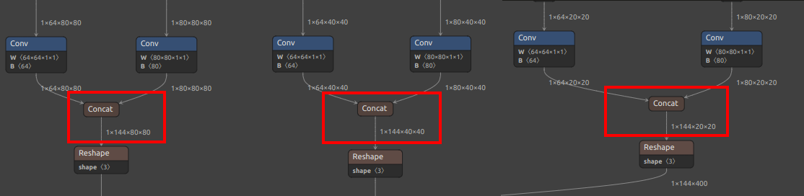
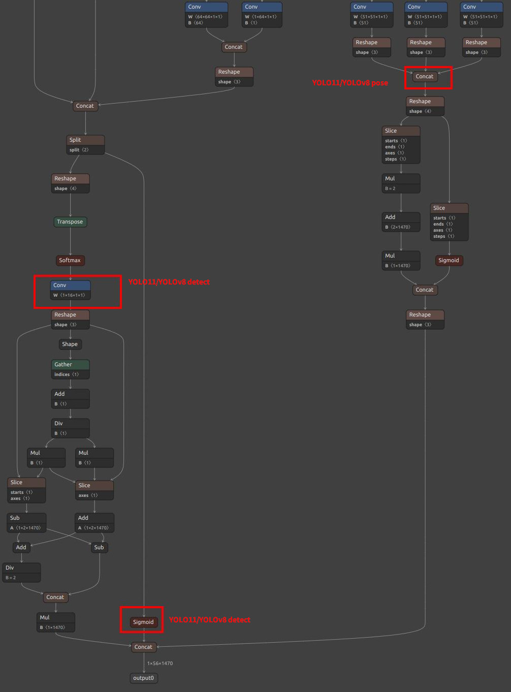
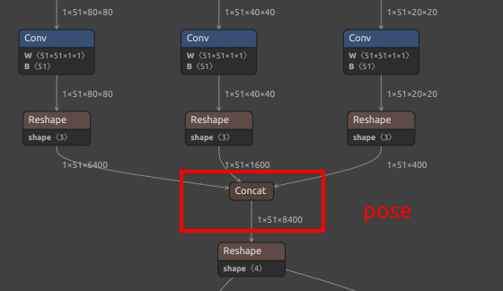
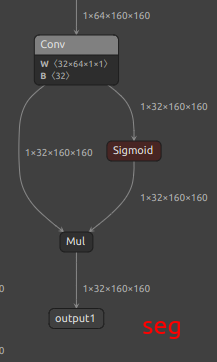
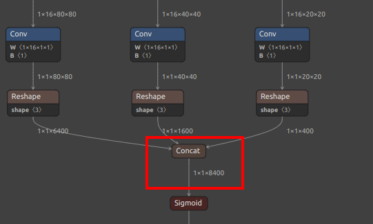
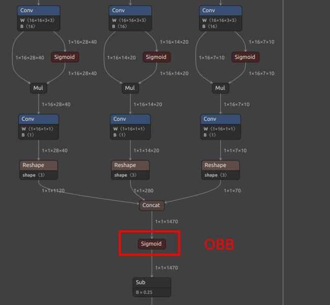
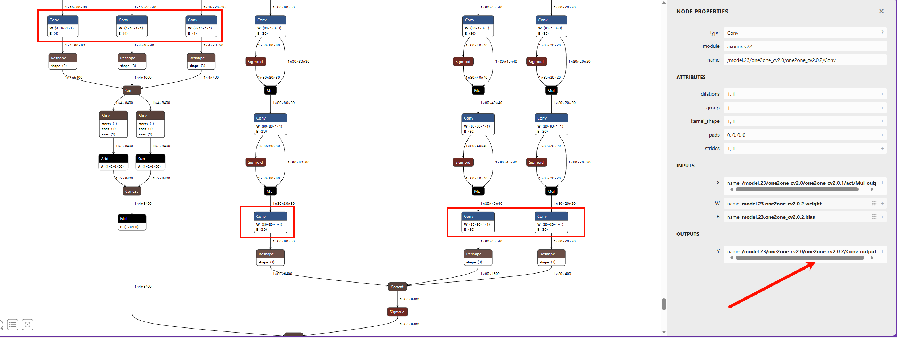

English
EnglishOffline Training YOLO26/YOLO11/YOLOv8 Models for MaixCAM with MaixPy:Custom Object Detection & Keypoint Detection
Update history
| Date | Version | Author | Update content |
|---|---|---|---|
| 2026-02-04 | v4.0 | Tao | Added YOLO26 support |
| 2025-07-01 | v3.0 | neucrack | Added MaixCAM2 support |
| 2024-10-10 | v2.0 | neucrack | Added YOLO11 support |
| 2024-06-21 | v1.0 | neucrack | Initial documentation |
Introduction
The official default model supports detection of 80 object classes. If this does not meet your requirements, you can train your own custom object detector by setting up a training environment on your local computer or server.
YOLOv8 / YOLO11 not only support object detection, but also yolov8-pose / YOLO11-pose for keypoint detection. In addition to the official human keypoints, you can create your own custom keypoint datasets to train detection for specific objects and keypoints.
Since YOLOv8 and YOLO11 mainly differ in their internal network architecture while sharing the same preprocessing and postprocessing steps, the training and conversion procedures are identical—only the output node names differ.
Note: This document covers custom training, but assumes you already possess some foundational knowledge. If not, please study independently:
- This document does not cover training environment setup. Please search for and install a PyTorch environment on your own.
- This document does not explain basic machine learning concepts or fundamental Linux usage.
If you find areas for improvement in this document, feel free to click Edit this document in the top-right corner to contribute and submit a documentation PR.
Workflow & Document Objectives
To use your model with MaixPy (MaixCAM), follow this process:
- Set up a training environment (omitted in this document; search for PyTorch environment setup guides).
- Clone the YOLO11/YOLOv8/YOLO26 source code locally.
- Prepare a dataset formatted for YOLO11 / YOLOv8 / YOLO26.
- Train the model and export an
onnxmodel file (the final output of this document). - Convert the
onnxmodel to a MaixPy-compatibleMUDfile, as detailed in MaixCAM Model Conversion. - Load and run the model with MaixPy.
Where to Find Datasets for Training
Reference Materials
Since these are general procedures, this document only provides a workflow overview. For specific details, refer to the YOLO26 / YOLO11 / YOLOv8 official code and documentation (recommended) and search for training tutorials. The final goal is to export an ONNX file.
If you find helpful articles, please modify this document and submit a PR.
Exporting ONNX Models for YOLO26 / YOLO11 / YOLOv8
Create an export_onnx.py file in the ultralytics directory:
from ultralytics import YOLO
import sys
print(sys.path)
net_name = sys.argv[1] # yolov8n.pt yolov8n-pose.pt # https://docs.ultralytics.com/models/yolov8/#supported-tasks-and-modes
input_width = int(sys.argv[2])
input_height = int(sys.argv[3])
# Load a model
model = YOLO(net_name) # load an official model
# model = YOLO("path/to/best.pt") # load a custom model
# Predict with the model
results = model("https://ultralytics.com/images/bus.jpg") # predict on an image
path = model.export(format="onnx", imgsz=[input_height, input_width], dynamic=False, simplify=True, opset=17) # export the model to ONNX format
print(path)
Run python export_onnx.py yolov8n.pt 320 224 to export the ONNX model. Here we re-specify the input resolution—models are trained at 640x640, and we redefine it to improve runtime speed. 320x224 is chosen for its aspect ratio similarity to MaixCAM's screen for easier display. For MaixCAM2, use 640x480 or 320x240, or set as needed for your application.
Converting to MaixCAM-Compatible Models & MUD Files
As of 2026.2.4, MaixPy/MaixCDK supports YOLO26 / YOLOv8 / YOLO11 detection, YOLOv8-pose / YOLO11-pose keypoint detection, YOLOv8-seg / YOLO11-seg segmentation, and YOLOv8-obb / YOLO11-obb oriented bounding box detection.
Convert models following MaixCAM Model Conversion and MaixCAM2 Model Conversion.
Output Node Selection
Note the output node selection (values may vary for your model; locate matching nodes in the diagrams below):
For YOLO11 / YOLOv8, MaixPy supports two node selection schemes, chosen based on the hardware platform:
| Model & Features | Scheme 1 | Scheme 2 |
|---|---|---|
| Target Devices | MaixCAM2 (recommended) MaixCAM (slightly slower than Scheme 2) |
MaixCAM (recommended) |
| Features | Offloads more computation to CPU postprocessing; quantization is more stable, slightly slower than Scheme 2 | Offloads more computation to NPU and includes quantization |
| Notes | None | Quantization fails on MaixCAM2 in practice |
| YOLOv8 Detection | /model.22/Concat_1_output_0/model.22/Concat_2_output_0/model.22/Concat_3_output_0 |
/model.22/dfl/conv/Conv_output_0/model.22/Sigmoid_output_0 |
| YOLO11 Detection | /model.23/Concat_output_0/model.23/Concat_1_output_0/model.23/Concat_2_output_0 |
/model.23/dfl/conv/Conv_output_0/model.23/Sigmoid_output_0 |
| YOLOv8-pose Keypoint | /model.22/Concat_1_output_0/model.22/Concat_2_output_0/model.22/Concat_3_output_0/model.22/Concat_output_0 |
/model.22/dfl/conv/Conv_output_0/model.22/Sigmoid_output_0/model.22/Concat_output_0 |
| YOLO11-pose Keypoint | /model.23/Concat_1_output_0/model.23/Concat_2_output_0/model.23/Concat_3_output_0/model.23/Concat_output_0 |
/model.23/dfl/conv/Conv_output_0/model.23/Sigmoid_output_0/model.23/Concat_output_0 |
| YOLOv8-seg Segmentation | /model.22/Concat_1_output_0/model.22/Concat_2_output_0/model.22/Concat_3_output_0/model.22/Concat_output_0output1 |
/model.22/dfl/conv/Conv_output_0/model.22/Sigmoid_output_0/model.22/Concat_output_0output1 |
| YOLO11-seg Segmentation | /model.23/Concat_1_output_0/model.23/Concat_2_output_0/model.23/Concat_3_output_0/model.23/Concat_output_0output1 |
/model.23/dfl/conv/Conv_output_0/model.23/Sigmoid_output_0/model.23/Concat_output_0output1 |
| YOLOv8-obb Oriented BBox | /model.22/Concat_1_output_0/model.22/Concat_2_output_0/model.22/Concat_3_output_0/model.22/Concat_output_0 |
/model.22/dfl/conv/Conv_output_0/model.22/Sigmoid_1_output_0/model.22/Sigmoid_output_0 |
| YOLO11-obb Oriented BBox | /model.23/Concat_1_output_0/model.23/Concat_2_output_0/model.23/Concat_3_output_0/model.23/Concat_output_0 |
/model.23/dfl/conv/Conv_output_0/model.23/Sigmoid_1_output_0/model.23/Sigmoid_output_0 |
| YOLO26 Detection | /model.23/one2one_cv2.0/one2one_cv2.0.2/Conv_output_0 /model.23/one2one_cv2.1/one2one_cv2.1.2/Conv_output_0 /model.23/one2one_cv2.2/one2one_cv2.2.2/Conv_output_0 /model.23/one2one_cv3.0/one2one_cv3.0.2/Conv_output_0 /model.23/one2one_cv3.1/one2one_cv3.1.2/Conv_output_0 /model.23/one2one_cv3.2/one2one_cv3.2.2/Conv_output_0 |
Same as MaixCAM2 |
| YOLOv8/YOLO11 Detection Output Nodes |  |
 |
| YOLOv8/YOLO11 Pose Extra Output Node |  |
See pose branch above |
| YOLOv8/YOLO11 Seg Extra Output Node |  |
|
| YOLOv8/YOLO11 OBB Extra Output Node |  |
 |
| YOLO26 Detection Output Nodes |  |
Same as MaixCAM2 |
Conversion Scripts
One-click YOLO26 conversion script (run in container):
MaixCam/Pro:
#!/bin/bash
set -e
net_name=yolo26n
input_w=320
input_h=224
# mean: 0, 0, 0
# std: 255, 255, 255
# mean
# 1/std
# mean: 0, 0, 0
# scale: 0.00392156862745098, 0.00392156862745098, 0.00392156862745098
# convert to mlir
model_transform.py \
--model_name ${net_name} \
--model_def ./${net_name}.onnx \
--input_shapes [[1,3,${input_h},${input_w}]] \
--mean "0,0,0" \
--scale "0.00392156862745098,0.00392156862745098,0.00392156862745098" \
--keep_aspect_ratio \
--pixel_format rgb \
--channel_format nchw \
--output_names "/model.23/one2one_cv2.0/one2one_cv2.0.2/Conv_output_0,/model.23/one2one_cv2.1/one2one_cv2.1.2/Conv_output_0,/model.23/one2one_cv2.2/one2one_cv2.2.2/Conv_output_0,/model.23/one2one_cv3.0/one2one_cv3.0.2/Conv_output_0,/model.23/one2one_cv3.1/one2one_cv3.1.2/Conv_output_0,/model.23/one2one_cv3.2/one2one_cv3.2.2/Conv_output_0" \
--test_input ./image.jpg \
--test_result ${net_name}_top_outputs.npz \
--tolerance 0.99,0.99 \
--mlir ${net_name}.mlir
echo "calibrate for int8 model"
# export int8 model
run_calibration.py ${net_name}.mlir \
--dataset ./coco \
--input_num 200 \
-o ${net_name}_cali_table
echo "convert to int8 model"
# export int8 model
# add --quant_input, use int8 for faster processing in maix.nn.NN.forward_image
model_deploy.py \
--mlir ${net_name}.mlir \
--quantize INT8 \
--quant_input \
--calibration_table ${net_name}_cali_table \
--processor cv181x \
--test_input ${net_name}_in_f32.npz \
--test_reference ${net_name}_top_outputs.npz \
--tolerance 0.9,0.6 \
--model ${net_name}_int8.cvimodel
MaixCam2:
#!/bin/bash
set -e
############# Modify ####################
model_name=$1
model_path=./${model_name}.onnx
images_dir=./coco
images_num=100
input_names=images
config_path=yolo26_build_config.json
output_nodes=(
"/model.23/one2one_cv2.0/one2one_cv2.0.2/Conv_output_0" # bbox 80x80
"/model.23/one2one_cv2.1/one2one_cv2.1.2/Conv_output_0" # bbox 40x40
"/model.23/one2one_cv2.2/one2one_cv2.2.2/Conv_output_0" # bbox 20x20
"/model.23/one2one_cv3.0/one2one_cv3.0.2/Conv_output_0" # cls 80x80
"/model.23/one2one_cv3.1/one2one_cv3.1.2/Conv_output_0" # cls 40x40
"/model.23/one2one_cv3.2/one2one_cv3.2.2/Conv_output_0" # cls 20x20
)
#############################################
# Parse node configuration
onnx_output_names=""
json_outputs=""
for node in "${output_nodes[@]}"; do
# Build output parameters for extract_onnx
if [ -n "$onnx_output_names" ]; then
onnx_output_names="${onnx_output_names},"
fi
onnx_output_names="${onnx_output_names}${node}"
# Build JSON output_processors
json_outputs="${json_outputs}
{
\"tensor_name\": \"${node}\",
\"dst_perm\": [0, 2, 3, 1]
},"
done
# Remove trailing comma
json_outputs="${json_outputs%,}"
# Generate JSON configuration file
cat > $config_path << EOF
{
"model_type": "ONNX",
"npu_mode": "NPU1",
"quant": {
"input_configs": [
{
"tensor_name": "${input_names}",
"calibration_dataset": "tmp_images/images.tar",
"calibration_size": ${images_num},
"calibration_mean": [0, 0, 0],
"calibration_std": [255, 255, 255]
}
],
"calibration_method": "MinMax",
"precision_analysis": true
},
"input_processors": [
{
"tensor_name": "${input_names}",
"tensor_format": "RGB",
"tensor_layout": "NCHW",
"src_format": "RGB",
"src_dtype": "U8",
"src_layout": "NHWC",
"csc_mode": "NoCSC"
}
],
"output_processors": [${json_outputs}
],
"compiler": {
"check": 3,
"check_mode": "CheckOutput",
"check_cosine_simularity": 0.9
}
}
EOF
echo -e "\e[32mConfiguration file generated: ${config_path}\e[0m"
# Create gen_cali_images_tar.py
cat > gen_cali_images_tar.py << 'PYTHON_SCRIPT'
import sys
import os
import random
import shutil
images_dir = sys.argv[1]
images_num = int(sys.argv[2])
print("images dir:", images_dir)
print("images num:", images_num)
print("current dir:", os.getcwd())
files = os.listdir(images_dir)
valid = []
for name in files:
path = os.path.join(images_dir, name)
ext = os.path.splitext(name)[1]
if ext.lower() not in [".jpg", ".jpeg", ".png"]:
continue
valid.append(path)
print(f"images dir {images_dir} have {len(valid)} images")
if len(valid) < images_num:
print(f"no enough images in {images_dir}, have: {len(valid)}, need {images_num}")
sys.exit(1)
idxes = random.sample(range(len(valid)), images_num)
shutil.rmtree("tmp_images", ignore_errors=True)
os.makedirs("tmp_images/images")
for i in idxes:
target = os.path.join("tmp_images", "images", os.path.basename(valid[i]))
shutil.copyfile(valid[i], target)
os.chdir("tmp_images/images")
os.system("tar -cf ../images.tar *")
# shutil.rmtree("tmp_images/images")
PYTHON_SCRIPT
# Create extract_onnx.py
cat > extract_onnx.py << 'PYTHON_SCRIPT'
import onnx
import sys
input_path = sys.argv[1]
output_path = sys.argv[2]
input_names_str = sys.argv[3]
output_names_str = sys.argv[4]
input_names = []
for s in input_names_str.split(","):
input_names.append(s.strip())
output_names = []
for s in output_names_str.split(","):
output_names.append(s.strip())
onnx.utils.extract_model(input_path, output_path, input_names, output_names)
PYTHON_SCRIPT
# extract and onnxsim
mkdir -p tmp1
onnx_extracted=tmp1/${model_name}_extracted.onnx
onnxsim_path=tmp1/${model_name}.onnx
# Step 1: Extract specified output nodes
echo -e "\e[32mStep 1: Extract ONNX output nodes\e[0m"
python extract_onnx.py $model_path $onnx_extracted $input_names "$onnx_output_names"
# Step 2: Simplify model
echo -e "\e[32mStep 2: ONNX simplification\e[0m"
onnxsim $onnx_extracted $onnxsim_path
python gen_cali_images_tar.py $images_dir $images_num
mkdir -p out
tmp_config_path=tmp/$config_path
# vnpu
echo -e "\e[32mBuilding ${model_name}_vnpu.axmodel\e[0m"
rm -rf tmp
mkdir tmp
cp $config_path $tmp_config_path
sed -i '/npu_mode/c\"npu_mode": "NPU1",' $tmp_config_path
pulsar2 build --target_hardware AX620E --input $onnxsim_path --output_dir tmp --config $tmp_config_path
cp tmp/compiled.axmodel out/${model_name}_vnpu.axmodel
# npu all
echo -e "\e[32mBuilding ${model_name}_npu.axmodel\e[0m"
rm -rf tmp
mkdir tmp
cp $config_path $tmp_config_path
sed -i '/npu_mode/c\"npu_mode": "NPU2",' $tmp_config_path
pulsar2 build --target_hardware AX620E --input $onnxsim_path --output_dir tmp --config $tmp_config_path
cp tmp/compiled.axmodel out/${model_name}_npu.axmodel
rm -rf tmp
echo -e "\e[32mGenerate models done, in out dir\e[0m"
Modifying the MUD File
For object detection, the MUD file is as follows (set model_type to yolo11 for YOLO11, yolo26 for YO26):
MaixCAM/MaixCAM-Pro:
[basic]
type = cvimodel
model = yolov8n.cvimodel
[extra]
model_type = yolov8
input_type = rgb
mean = 0, 0, 0
scale = 0.00392156862745098, 0.00392156862745098, 0.00392156862745098
labels = person, bicycle, car, motorcycle, airplane, bus, train, truck, boat, traffic light, fire hydrant, stop sign, parking meter, bench, bird, cat, dog, horse, sheep, cow, elephant, bear, zebra, giraffe, backpack, umbrella, handbag, tie, suitcase, frisbee, skis, snowboard, sports ball, kite, baseball bat, baseball glove, skateboard, surfboard, tennis racket, bottle, wine glass, cup, fork, knife, spoon, bowl, banana, apple, sandwich, orange, broccoli, carrot, hot dog, pizza, donut, cake, chair, couch, potted plant, bed, dining table, toilet, tv, laptop, mouse, remote, keyboard, cell phone, microwave, oven, toaster, sink, refrigerator, book, clock, vase, scissors, teddy bear, hair drier, toothbrush
MaixCAM2:
[basic]
type = axmodel
model_npu = yolo11n_640x480_npu.axmodel
model_vnpu = yolo11n_640x480_vnpu.axmodel
[extra]
model_type = yolo11
type=detector
input_type = rgb
labels = person, bicycle, car, motorcycle, airplane, bus, train, truck, boat, traffic light, fire hydrant, stop sign, parking meter, bench, bird, cat, dog, horse, sheep, cow, elephant, bear, zebra, giraffe, backpack, umbrella, handbag, tie, suitcase, frisbee, skis, snowboard, sports ball, kite, baseball bat, baseball glove, skateboard, surfboard, tennis racket, bottle, wine glass, cup, fork, knife, spoon, bowl, banana, apple, sandwich, orange, broccoli, carrot, hot dog, pizza, donut, cake, chair, couch, potted plant, bed, dining table, toilet, tv, laptop, mouse, remote, keyboard, cell phone, microwave, oven, toaster, sink, refrigerator, book, clock, vase, scissors, teddy bear, hair drier, toothbrush
input_cache = true
output_cache = true
input_cache_flush = false
output_cache_inval = true
mean = 0,0,0
scale = 0.00392156862745098, 0.00392156862745098, 0.00392156862745098
Replace labels with your custom trained object classes.
For keypoint detection (yolov8-pose), set type=pose.
For segmentation (yolov8-seg), set type=seg.
For oriented bounding box detection (yolov8-obb), set type=obb.
Upload & Share to MaixHub
Upload and share your models at the MaixHub Model Zoo. Provide multiple resolutions for users to choose from.